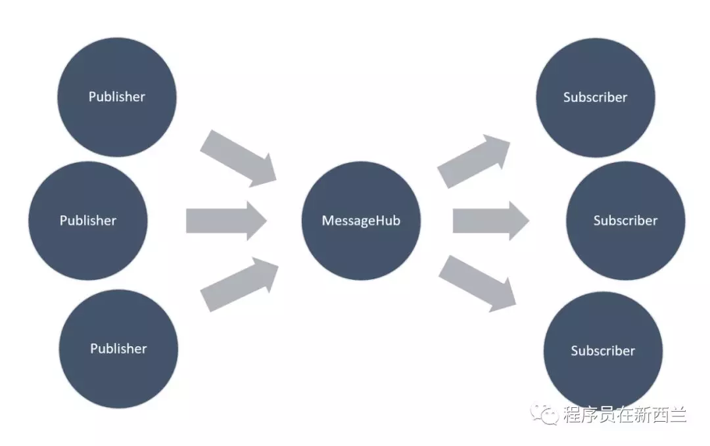

本文目录：
介绍
Sub-Pub 模式是一种常用的设计模式，用来在系统的不同组件中传递消息。发送消息的称为 Publisher，接收消息的称为 Subscriber。双方一般不需要知道对方的存在，由一个代理负责消息的传递。其结构如图所示：

最初的需求是我需要开发一个实现 Socket 发送/接收的WPF应用程序。首先，我应用 MVVM 模式创建了一个基本的 WPF 应用程序。然后，我创建了另一个项目来完成所有与 Socket 通信有关的工作。接下来，我必须将 Socket 项目集成到 ViewModel 项目中，以操作 Socket 连接。
显然，我们可以为此使用 Event。例如，我们可以有一个名为 SocketServer 的类，该类具有一个事件来接收 Socket 数据包，然后在 ViewModel 层中对其进行订阅。但这意味着我们必须在 ViewModel 层中创建 SocketServer 类的实例，该类将 ViewModel 层与 Socket 项目耦合在一起。我希望创建一个中间件以解耦它们。 这样，发布者和订阅者就不需要知道对方的存在了。
MvvmCross 提供了一个名为 Messenger 的插件以在 ViewModel 之间进行通信。但它依赖于某些 MvvmCross 组件，这意味着如果我想在其他项目中使用此插件，则必须引用 MvvmCross。这对我当前的情况而言并不理想，因为实际上，Socket 项目没有必要引用 MvvmCross。因此，我做了一个专注于发布/订阅模式的项目，并删除了对 MvvmCross 的依赖。现在，可以在任何 WPF，UWP 和 Xamarin 项目中重复使用它。我已将其发布到 GitHub 上：https://github.com/yanxiaodi/CoreMessenger ，并发布了 NuGet 包：https://www.nuget.org/packages/FunCoding.CoreMessenger/ 。本文仅介绍该组件的实现细节，后面会再写一篇文章介绍如何使用 Azure DevOps 实现 CI/CD。
下面让我们了解一下 Sub-Pub 模式的一种实现方式。
{kind=link}
Message - 消息
Message 是在此系统中表示消息的抽象类：
1 | public abstract class Message |
我们需要从该抽象类派生不同消息的实例。它有一个名为 sender 的参数，因此订阅者可以获取发送者的实例。但这并不是强制性的。
Subscription - 订阅
BaseSubscription 是订阅的基类。代码如下：
1 | public abstract class BaseSubscription |
它有一个 Id 属性和一个 tag 属性，因此您可以放置一些标签来区分或分组订阅实例。Priority 属性是一个枚举类型，用于指示订阅的优先级，因此将按预期顺序调用订阅。订阅有两种类型，一是强引用订阅 StrongSubscription：
1 | public class StrongSubscription<TMessage> : BaseSubscription where TMessage : Message |
它继承了 BaseSubscription 并覆盖了 Invoke() 方法。基本上，它具有一个名为 _action 的字段，该字段在创建实例时定义。当我们发布消息时，订阅将调用 Invoke() 方法来执行该 _action 。我们使用 Task 来包装动作，以便可以利用异步操作的优势。
这是名为 WeakSubscription 的另一种订阅：
1 | public class WeakSubscription<TMessage> : BaseSubscription where TMessage : Message |
它与强引用订阅的区别在于 action 存储在 WeakReference 字段中。您可以在这里了解更多信息： WeakReference 类。它用于表示类型化的弱引用，该弱引用引用一个对象，同时仍允许该对象被垃圾回收回收。在使用它之前，我们需要使用 TryGetTarget(T) 方法检查目标是否已由 GC 收集。如果此方法返回 false，则表示该引用已被 GC 收集。
如果使用 StrongSubscription，Messenger 将保留对回调方法的强引用，并且 Garbage Collection 将不会破坏订阅。在这种情况下，您需要明确取消订阅，以避免内存泄漏。否则，可以使用 WeakSubscription，当对象超出范围时，会自动删除订阅。
MessengerHub - 消息总线
MessengerHub 是整个应用程序域中的一个单例实例。我们不需要使用依赖注入来创建实例，因为它的目的很明确，我们只有一个实例。这是实现单例模式的简单方法：
1 | public class MessengerHub |
MessengerHub 在其内部维护一个 ConcurrentDictionary 来管理订阅的实例，如下所示：
1 | private readonly ConcurrentDictionary<Type, ConcurrentDictionary<Guid, BaseSubscription>> _subscriptions = |
该 ConcurrentDictionary 的 Key 是 Message 的类型，Value 是一个 ConcurrentDictionary，其中包含该特定 Message 的一组订阅。显然，一种类型可能具有多个订阅。
Subscribe - 订阅
MessageHub 公开了几种重要的方法来订阅/取消订阅/发布消息。
Subscribe() 方法如下所示：
1 | public SubscriptionToken Subscribe<TMessage>(Action<TMessage> action, |
当我们订阅消息时，会创建 Subscription 的实例并将其添加到字典中。根据您的选择，它可能是强引用或者弱引用。然后它将创建一个 SubscriptionToken，这是一个实现 IDisposable 接口来管理订阅的类：
1 | public sealed class SubscriptionToken : IDisposable |
当我们创建 SubscriptionToken 的实例时，实际上我们传递了一个方法来销毁自己-因此，当调用 Dispose 方法时，它将首先取消订阅。
Unsubscribe - 取消订阅
取消订阅消息的方法如下所示：
1 | public async Task Unsubscribe<TMessage>(SubscriptionToken subscriptionToken) where TMessage : Message |
这段代码很容易理解。当我们取消订阅消息时，订阅将从字典中删除。
Publish - 发布
我们已经订阅了消息，并创建了存储在字典中的订阅实例。现在可以发布消息了。发布消息的方法如下所示：
1 | public async Task Publish<TMessage>(TMessage message) where TMessage : Message |
当我们发布一条消息时，MessageHub 将查询字典以检索该消息的订阅列表，然后循环执行操作。
需要注意的另一件事是，由于某些订阅可能是弱引用，因此需要检查执行结果。如果引用已经被 GC 收集，则执行结果会返回 false，这时候需要将该订阅从订阅列表中删除。
用法
从NuGet安装
1 | PM> Install-Package FunCoding.CoreMessenger |
在整个应用程序域中，将 MessengerHub.Instance 用作单例模式。它提供了以下方法：
发布：
1
public async Task Publish<TMessage>(TMessage message)
订阅：
1
public SubscriptionToken Subscribe<TMessage>(Action<TMessage> action, ReferenceType referenceType = ReferenceType.Weak, SubscriptionPriority priority = SubscriptionPriority.Normal, string tag = null)
取消订阅：
1
public async Task Unsubscribe<TMessage>(SubscriptionToken subscriptionToken)
创建 Message 类
首先，定义一个从 Message 继承的类，如下所示：
1 | public class TestMessage : Message |
然后在组件A中创建 Message 的实例，如下所示：
1 | var message = new TestMessage(this, "Test Content"); |
订阅
定义一个 SubscriptionToken 实例来存储订阅。在组件 B 中订阅消息，如下所示：
1 | public class HomeViewModel |
发布 Message
在组件 A 中发布消息：
1 | public async Task PublishMessage() |
就是这么简单。
参数
Subscribe 方法的完整签名为：
1 | public SubscriptionToken Subscribe<TMessage>(Action<TMessage> action, ReferenceType referenceType = ReferenceType.Weak, SubscriptionPriority priority = SubscriptionPriority.Normal, string tag = null) where TMessage : Message |
您可以指定以下参数：
ReferenceType。默认值为ReferenceType.Weak，因此您不必担心内存泄漏。一旦SubscriptionToken实例超出范围，GC 便可以自动收集它（但不确定何时）。如果需要保留强引用，请将参数指定为ReferenceType.Strong，以使 GC 无法收集它。SubscriptionPriority。默认值为SubscriptionPriority.Normal。有时需要控制一个“消息”的订阅的执行顺序。在这种情况下，请为订阅指定不同的优先级以控制执行顺序。注意，该参数不适用于不同的Message。Tag。为订阅指定一个标签，是可选的。
取消订阅
您可以使用以下方法取消订阅：
使用
Unsubscribe方法，如下所示：1
await MessengerHub.Instance.Unsubscribe<TestMessage>(_subscriptionTokenForTestMessage);
使用
SubscriptionToken的Dispose方法：1
_subscriptionTokenForTestMessage.Dispose();
在许多情况下，您不会直接调用这些方法。如果使用强订阅类型，则可能会导致内存泄漏问题。因此，建议使用 ReferenceType.Weak。请注意，如果令牌未存储在上下文中，则 GC 可能会立即收集它。例如：
1 | public void MayNotEverReceiveAMessage() |
与 MvvmCross.Messenger 的差异
如果您已经使用 MvvmCross 开发应用程序，并无需在 ViewModel 层之外传递消息，请直接使用 MvvmCross.Messenger。我仅实现了一些主要方法，没有提供 UI 线程调度的功能，并删除了对 MvvmCross 组件的依赖，因此只要您的项目目标 .NET Standard 2.0 以上，就可以在任何 WPF，UWP 和 Xamarin 项目中使用。另外，Publish 方法始终在后台运行，以避免阻塞 UI。但是您应该知道何时需要返回 UI 线程，尤其是当您需要与 UI 控件进行交互时。另一个区别是无需使用 DI 来创建 MessageHub 实例，该实例是所有应用程序域中的单例实例。如果解决方案包含需要相互通信的多个组件，则单例模式会比较简单，DI 将使其更加复杂。